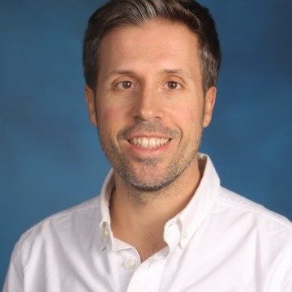
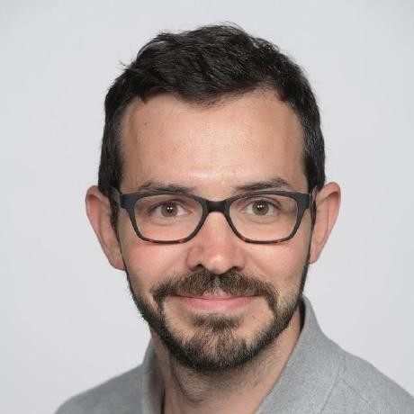
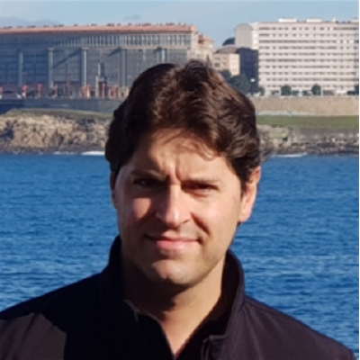

Gladys Rodríguez tiene más de 25 años en el campo de Tecnologías. La carrera temprana de Gladys comenzó como programadora utilizando
lenguajes como C++ y Pascal. Mientras trabajaba para una empresa de comunicación, Gladys enseñó una clase sobre el uso de Office.
Luego de que un estudiante se acercó a ella muy feliz y le enseño lo que aprendió, Gladys sabía que tenía que continuar ese camino de
enseñar a organizaciones como utilizar la tecnología para lograr cosas impresionantes.
Después de varios años como Ingeniera y supervisar grupos de ingenieros en tecnología,
Gladys fundó su empresa para apoyar organizaciones legales y gubernamentales. Después de diez años siendo propietaria y gerente de su
empresa, vio oportunidades trabajar en Microsoft y concentrarse en lo que más le gustaba: ayudar a los clientes a usar la tecnología.
Gladys Rodríguez tiene más de 25 años en el campo de Tecnologías. La carrera temprana de Gladys comenzó como programadora utilizando
lenguajes como C++ y Pascal. Mientras trabajaba para una empresa de comunicación, Gladys enseñó una clase sobre el uso de Office.
Luego de que un estudiante se acercó a ella muy feliz y le enseño lo que aprendió, Gladys sabía que tenía que continuar ese camino de
enseñar a organizaciones como utilizar la tecnología para lograr cosas impresionantes.
Después de varios años como Ingeniera y supervisar grupos de ingenieros en tecnología,
Gladys fundó su empresa para apoyar organizaciones legales y gubernamentales. Después de diez años siendo propietaria y gerente de su
empresa, vio oportunidades trabajar en Microsoft y concentrarse en lo que más le gustaba: ayudar a los clientes a usar la tecnología.
Desde entonces en Microsoft, Gladys ha trabajado principalmente ayudando clientes con identidad, aplicar las estrategias de cero confianza
y aconsejar a clientes como aplicar seguridad de lado a lado incluyendo modernizando los Centros de Operaciones de Seguridad.
Entre los productos y servicios usados incluye Azure Active Directory (AD), Microsoft 365 Defender, Azure Sentinel,
Azure Policy y muchos otros.
 David es responsable de liderar el compromiso de preventa y posicionar las arquitecturas de seguridad de Azure, ayudando a clientes en su estrategia de transformación digital, siendo su rol de Microsoft Global Black Belt en la materia de arquitecturas de seguridad de Azure. La experiencia de David abarca la arquitectura de seguridad, infrastructuras de nube híbrida y la seguridad de la red Tiene más de 15 años de experiencia en la industria de TI. Antes de unirse a Microsoft, David trabajó para proveedores lideres de infraestructura de seguridad como Cisco y F5 Networks, desempeñando un papel de ingeniero de sistemas líder en el sector de telecomunicaciones y medios en el Reino Unido y España David es un profesional certificado en seguridad de sistemas de información (CISSP), profesional certificado en seguridad en la nube (CCSP), hacker ético certificado (CEH), arquitecto certificado por Microsoft Azure (AZ-300 y AZ-500) y experto certificado en internetwork de Cisco (CCIE)
 Javier Soriano tiene más de 15 años de experiencia como arquitecto de soluciones IT. Ha trabajado en múltiples áreas dentro del ámbito IT, como almacenamiento, virtualización, automatización y seguridad. Su puesto actual es Senior Program Manager en la división de ingeniería dedicada a la seguridad Cloud en Microsoft, donde ayuda a clientes y partners a implementar y operar sus operaciones de seguridad con Azure Sentinel.
 Marcelo es arquitecto de seguridad con foco en identidad, específicamente Azure AD, B2E, B2B, B2C y todo lo relacionado con federación e integración de aplicaciones. Trabaja en Microsoft desde el año 2008, habiéndose incorporado en Argentina como Premier Field Engineer especializado en identidad y seguridad, hasta el 2014, que es cuando se ha mudado a España, y en donde desempeña su rol actual, enfocado en Western Europe, y principalmente trabajando con clientes de España y Portugal. El rol actual de Marcelo está enfocado en post-venta, con el objetivo de hacer que las empresas hagan uso adecuado y óptimo de lo que tienen contratado, así como también impulsar la modernización de todo aquello que pueda representar beneficios no solo desde el punto de vista técnico, sino que también contribuyan a incrementar la disponibilidad de los diferentes servicios con el fin de garantizar la continuidad del negocio, reduciendo costes y complejidad al mismo tiempo. Marcelo es una persona muy activa en redes sociales como LinkedIn y Twitter, en donde constantemente comparte contenido y novedades relacionadas con su especialidad, así como también presenta en Microsoft Tech Talks y eventos internos. En el pasado y entre sus experiencias laborales más relevantes, Marcelo ha trabajado en diferentes Partners de Microsoft como consultor Microsoft y Citrix, así como también en empresas del rubro de salud y telecomunicaciones. Marcelo posee prácticamente todas las certificaciones de Microsoft relacionadas con identidad, así como también ha obtenido en el pasado otras certificaciones como ITIL, CCNA, CCA, y CCEA.